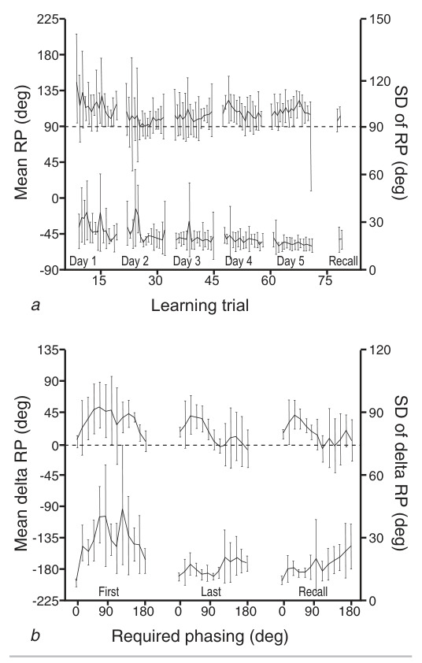
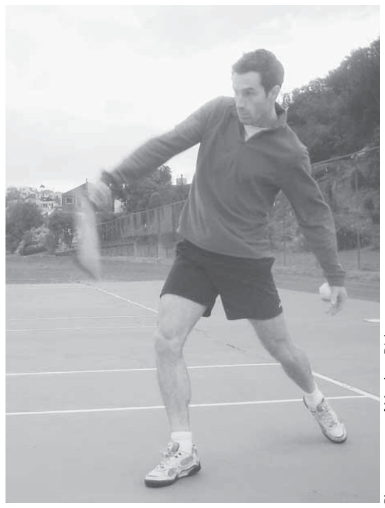
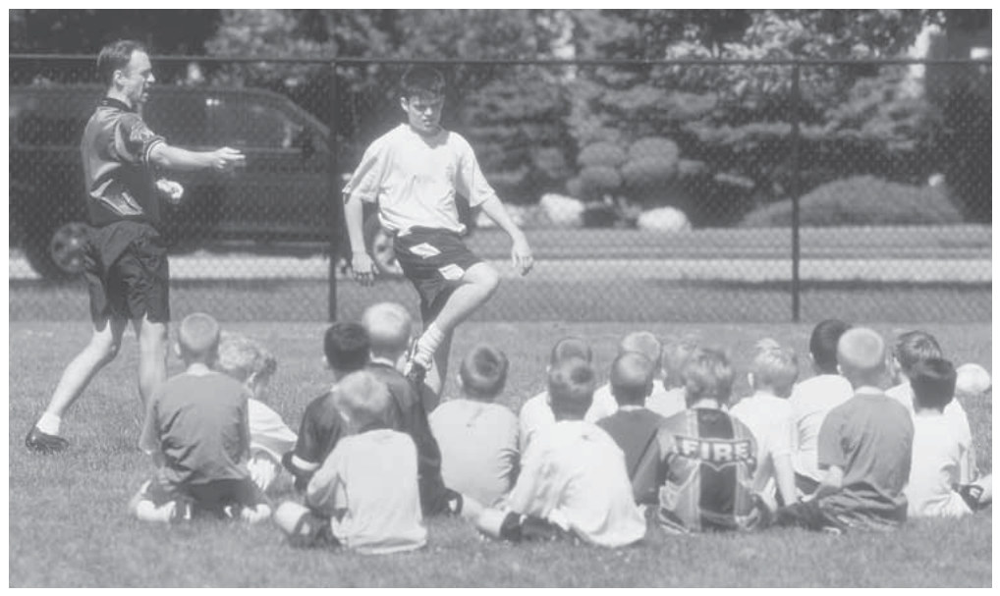

Chương 5 — Hiểu động lực học của tiếp thu kỹ năng
Thấu hiểu
động lực học của tiếp thu kỹ năng
CẤU TRÚC CHƯƠNG
Xây dựng cảnh quan nhận thức–vận động
Quét tìm sự thay đổi theo thời gian Tính đối xứng và tính tương đương chức năng Đánh giá việc học trong sư phạm phi tuyến Khi người học bị kẹt trong lối mòn: Hãy thực hiện một
bước tiến lớn
Góc nhìn của người thực hành
Huấn luyện viên điền kinh Giáo viên giáo dục thể chất Chuyên gia phục hồi chức năng và nhà vật lý trị liệu
Tóm tắt
CHƯƠNG 5 CHƯƠNG 5

Trong phần I, chúng tôi đã thảo luận về các ý tưởng lý thuyết của lý thuyết hệ thống động lực và tâm lý học sinh thái, cũng như cách người thực hành có thể hiểu rõ hơn về người học. Những lý thuyết này làm nền tảng cho cách tiếp cận dựa trên rào cản/giới hạn trong học vận động và cho phép chúng ta định nghĩa lại việc tiếp thu kỹ năng như một quá trình động liên tục liên quan đến việc tìm kiếm và ổn định các mẫu hình vận động phù hợp trên cảnh quan nhận thức–vận động.
Trong chương này, chúng tôi sẽ mô tả các nghiên cứu thực chứng ủng hộ mô hình học vận động của Newell (1985) nhằm minh họa thêm động lực học của tiếp thu kỹ năng (ví dụ, Zanone & Kelso, 1992, 1997). Chúng tôi cũng sẽ thảo luận cách đánh giá việc tiếp thu kỹ năng từ cách tiếp cận dựa trên rào cản/giới hạn, một mối bận tâm then chốt trong sư phạm phi tuyến. Cuối cùng, chúng tôi sẽ xem xét kỹ hơn cách huấn luyện viên, giáo viên giáo dục thể chất và nhà trị liệu có thể sử dụng triết lý không can thiệp trực tiếp được mô tả trong chương 4.
Xây dựng cảnh quan nhận thức–vận động
Trong chương 2, chúng tôi đã giải thích cách phối hợp vận động của con người phát sinh từ việc hệ thống vận động ổn định vào các trạng thái điểm hút cụ thể trong cảnh quan nhận thức–vận động. Cảnh quan này, hay mô hình các điểm hút động, phải được thay đổi dần để cho phép người thực hiện kết hợp các nhiệm vụ này đồng thời và theo cách có chức năng. Ví dụ, những người mới học tung bóng có thể bắt và ném một quả bóng riêng biệt nhưng ban đầu gặp khó khăn khi kết hợp các yếu tố này, điều cho thấy sự thích ứng mà cảnh quan nhận thức–vận động phải trải qua. Để việc học xảy ra, người thực hiện phải dùng nhiệm vụ cần học như một dạng thông tin cụ thể để định hình lại cảnh quan nhận thức–vận động. Nói cách khác, 'Khi việc học đã đạt được, mẫu hình được ghi nhớ tạo thành một điểm hút, một trạng thái ổn định của động lực học mẫu hình (giờ đã được biến đổi)' (Kelso, 1995, p. 163).
Trước khi xem xét bằng chứng thực chứng, chúng ta cần hiểu một số khái niệm then chốt. Trước hết, chúng ta cần hiểu bản chất của quá trình học, cụ thể là 'mức độ mà thông tin hành vi cụ thể hợp tác hay cạnh tranh với các xu hướng tự tổ chức tự phát quyết định các mẫu hình thu được và tính ổn định tương đối của chúng' (Kelso, 1995, p. 169). Nếu các xu hướng hành vi ban đầu không phù hợp với những gì được yêu cầu ở người thực hiện, việc học sẽ khó khăn hơn so với trường hợp có sự phù hợp chặt chẽ giữa động lực học nội tại của người học và thông tin hành vi của nhiệm vụ. Vì lý do này, rõ ràng là người thực hành nên mong đợi sự khác biệt lớn về tốc độ mà người học tiếp thu các kỹ năng vận động theo thời gian (Newell, Liu, & Mayer-Kress, 2001). Hãy xem xét một đứa trẻ cầm bút chì để vẽ bằng tay phải. Với loại người học này, viết bằng tay trái có khả năng mất nhiều thời gian hơn để học so với tay phải.
Điểm thứ hai là quá trình học một nhiệm vụ mới không chỉ liên quan đến sự thay đổi của một đặc điểm, mà của toàn bộ bố cục điểm hút. Khi một giếng điểm hút đang được tạo ra, các điểm hút lân cận có thể trở nên kém ổn định hơn. Hãy tưởng tượng một đứa trẻ ngồi thoải mái trên mặt bàn nhún. Nếu một đứa trẻ khác nhảy lên bàn nhún gần đứa thứ nhất, sự biến dạng của mặt bàn sẽ làm xáo trộn tính ổn định của đứa thứ nhất. Chúng ta có thể mong đợi một phản ứng tương tự từ một hệ thống vận động động, liên kết với nhau và mềm dẻo. Do đó, khi lên kế hoạch cho các chương trình tiếp thu kỹ năng, người thực hành nên cẩn trọng giảm thiểu tác động xáo trộn của việc xây dựng một điểm hút đối với tính ổn định của các điểm hút hoặc kỹ năng hiện có. Chúng tôi sẽ trở lại với những đặc điểm thiết kế này của chương trình học vận động ở các chương 7, 8 và 9.
Quét tìm sự thay đổi theo thời gian
Đối với các nhà lý thuyết và người thực hành trong học vận động, việc tìm ra cách theo dõi những thay đổi trong bố cục của cảnh quan là rất quan trọng. Trong các nghiên cứu, một cách hiệu quả để dò tìm toàn bộ cảnh quan nhận thức–vận động trong quá trình học là sử dụng quy trình quét (Yamanashi, Kawato, & Suzuki, 1980; Zanone & Kelso, 1992). Kỹ thuật thực chứng này yêu cầu người tham gia cố ý thay đổi một thông số trật tự, chẳng hạn như pha tương đối, theo từng bước. Khi hành vi của thông số trật tự được theo dõi, người quan sát về thực chất đang quét cảnh quan nhận thức–vận động để tìm các vùng ổn định và không ổn định (khác nhau về mức độ biến thiên của các thước đo được chọn). Kỹ thuật quét này có thể tạo ra những ảnh chụp tức thời về bố cục điểm hút trong quá trình nó tiến hóa, cho thấy tính ổn định tương đối của các vùng theo thời gian (Button, Bennett, & Davids, 2001).
Zanone và Kelso (1992) đã dùng quy trình quét để kiểm tra động lực học của học vận động trong khi người tham gia tiếp thu một nhiệm vụ phối hợp hai tay. Trong 5 buổi hàng ngày, người tham gia ngồi trước một bảng đen hiển thị một dạng đồng hồ nhịp thị giác và được hướng dẫn gập từng ngón tay sao cho trùng về thời gian với lúc hai đèn bật sáng. Một buổi điển hình gồm 3 khối
Việc những người mới học tung bóng có thể bắt và ném một quả bóng riêng biệt nhưng ban đầu gặp khó khăn khi kết hợp các yếu tố này cho thấy sự thích ứng mà cảnh quan nhận thức–vận động phải trải qua.

gồm 5 lần thử luyện tập, trong đó người tham gia luyện tập một pha tương đối (RP) mới được yêu cầu là 90° giữa các ngón tay. Trên đồng hồ nhịp, tần số chuyển động được đặt ở 1,75 hertz. Kiến thức về kết quả dưới dạng RP thực tế được cung cấp sau mỗi lần thử. Ở đầu và cuối mỗi buổi hàng ngày, cũng như giữa các khối luyện tập, một lượt quét được thực hiện trong đó RP được tăng dần từ 0° đến 180° qua 12 bước rời rạc mỗi bước 15°. Để đánh giá tính ổn định của mẫu hình theo thời gian, các lần thử nhớ lại được tiến hành 7 ngày sau, khi người tham gia phải tái tạo điều kiện 90° trong 1 phút.
Vào cuối ngày 1, tính biến thiên của RP vẫn thấp nhất ở 0° và 180°, tăng rõ rệt ở các giá trị trung gian. Những giá trị thấp của tính biến thiên RP cho thấy các vùng ổn định trong cảnh quan. Như mong đợi, các mẫu hình cùng pha và phản pha
là ổn định nhất, trong đó mẫu hình sau biến thiên nhiều hơn mẫu hình trước (xem thêm Spotlight on Research, chương 2). Ngoài ra, tính biến thiên giữa các người tham gia là nhỏ nhất ở các pha yêu cầu này. Tuy nhiên, đến cuối ngày 5, tính biến thiên RP cũng thấp ở 90°. Sự hút về vùng 90° thể hiện rõ qua độ dốc âm của các đường cong ở hai bên 90°, cho thấy sự chuyển từ động lực lưỡng ổn sang động lực tam ổn trong cảnh quan (xem hình 5.1).
Dữ liệu nhớ lại cũng cho thấy sự thay đổi này trong cảnh quan nhận thức–vận động tương đối bền vững. Phân tích tiếp theo trên các mẫu hình 0° và 180° cho thấy các điểm hút ban đầu trở nên kém ổn định (và kém hấp dẫn hơn) khi pha 90° được học. Như chúng tôi đã lưu ý trong chương 4, phát hiện sau rõ ràng cho thấy tính siêu ổn định đặc trưng cho khuynh hướng của một hệ thống vận động đang thay đổi cùng với việc học (xem Kelso, 1981). Zanone và Kelso (1992) cho rằng việc học không nhất thiết lúc nào cũng đòi hỏi một sự chuyển pha đột ngột (xem thêm Nouritt et al., 2003) mà cũng có thể diễn ra dần dần hơn khi

Hình 5.1: Sự hút về vùng 90° của cảnh quan được chứng minh bằng tính biến thiên RP thấp và độ dốc âm của các đường cong ở hai bên 90°, cho thấy sự chuyển từ động lực lưỡng ổn sang động lực tam ổn.
Trích từ P.G. Zanone and J.A.S. Kelso, "Evolution of behavioral attractors with learning: Nonequilibrium phase transitions," Journal of Experimental Psychology: Human Perception and Performance Volume 18, Issue 2, pp. 403-421, 1992, Copyright © American Psychological Association. Reprinted with permission.
Lần luyện tập
-45
-90
0 15 30 45 60 75
Ngày 1 Ngày 2 Ngày 3 Ngày 4 Ngày 5 Nhớ lại
RP trung bình (độ)
Độ lệch chuẩn của RP (độ)
Pha yêu cầu (độ)
-45
-90
-135
-180
-225
0 0 90 180 0 90 180 0 90 180
Lần đầu Lần cuối Nhớ lại
Delta RP trung bình (độ)
Độ lệch chuẩn của delta RP (độ)
'khoảng cách trong không gian biến số tập thể giữa các yêu cầu hành vi và các mẫu hình được ưu tiên nội tại dường như quyết định bản chất của sự thay đổi' (p. 418). Cuối cùng, trong nghiên cứu của Zanone và Kelso, tốc độ học mẫu hình 90° khác nhau giữa người tham gia. Một số người cho thấy dấu hiệu hút về mẫu hình này chỉ sau 2 ngày, trong khi những người khác cần tới 5 ngày. Tất nhiên, những khác biệt giữa người học là đặc điểm mà nhiều huấn luyện viên và giáo viên nhận ra, dù còn được diễn đạt khá mơ hồ. Cách giải thích học vận động theo hệ thống động lực cho thấy tính biến thiên giữa cá nhân có thể là đặc hữu của quá trình học vì người học bắt đầu với những khác biệt về động lực học nội tại. Như đã đề cập trong chương 4, sự tương thích giữa động lực học của nhiệm vụ cần học và động lực học nội tại của người học có thể quyết định tốc độ học vận động.
Trong hình 5.2, chúng ta có thể quan sát cách hình dạng của các giếng điểm hút thay đổi trong thí nghiệm của Zanone và Kelso (1992). Hình 5.2a cho thấy tính ổn định của pha tương đối dao động như thế nào trên bố cục điểm hút, với các mẫu hình phản pha và cùng pha thể hiện các trạng thái ổn định (một chế độ lưỡng ổn). Như đã thảo luận trước đó, người ta cho rằng các trạng thái này đại diện cho động lực học nội tại của nhiệm vụ này trong khi vắng mặt thông tin hành vi. Trong hình 5.2b, ba đường cho thấy điều gì xảy ra với cảnh quan khi các mẫu hình 0°, 90° hoặc 180° được học (tức là khi các ảnh hưởng thông số cụ thể được thêm vào). Lưu ý rằng khi các mẫu hình 0° hoặc 180° được học, độ rộng của giếng điểm hút tương ứng đã tăng lên. Điều này cho thấy việc học có thể tăng sức hút của các trạng thái này đối với hệ thống vận động. Tuy nhiên, khi mẫu hình 90° được học, thế năng bị biến dạng và sự cạnh tranh giữa thông tin hành vi và động lực học nội tại kéo các cực tiểu về phía 90°. Một giếng điểm hút mới, rộng hơn đã được tạo ra, trong đó tính linh hoạt tăng lên nhờ ảnh hưởng của động lực học nội tại nền tảng. Khi việc học ở 90° tiếp diễn, hình dạng của giếng điểm hút này thu hẹp và sâu hơn khi mẫu hình

Hình 5.2: (a) Tính ổn định của pha tương đối dao động trên bố cục điểm hút, với các mẫu hình phản pha và cùng pha thể hiện các trạng thái ổn định. (b) Ba đường cho thấy điều gì xảy ra với cảnh quan khi các mẫu hình 0°, 90° hoặc 180° được học.
Trích từ P.G. Zanone and J.A.S. Kelso, "Evolution of behavioral attractors with learning: Nonequilibrium phase transitions," Journal of Experimental Psychology: Human Perception and Performance Volume 18, Issue 2, pp. 403-421, 1992, Copyright © American Psychological Association. Reprinted with permission.
Động lực học nội tại
Pha tương đối (độ)
2.5
2.0
1.5
1.0
0.5
0.0
-1.0
-1.5
-2.0
-2.5-90 0 90 180 270
V(Rel. phase) [Hz]
Pha tương đối độ
Với thông tin hành vi
-10
-15
-20
-25-90 0 90 180 270
V(Rel. phase) [Hz]
được ghi nhớ và tăng tính ổn định với cái giá là các mẫu hình 0° và 180° (xem Wenderoth & Bock, 2001).
Tính đối xứng và tính tương đương chức năng
Trong một nghiên cứu sau đó, Zanone và Kelso (1997) lại dùng nhiệm vụ vẫy ngón tay hai tay để chứng minh hai đặc điểm thú vị khác của người học đang tìm cách ổn định một mẫu hình vận động mới. Thứ nhất, họ chứng minh rằng người học có thể tạo ra các mẫu hình đối xứng với những mẫu hình họ đang luyện tập. Ví dụ, khi người tham gia học một pha 90° (tức là ngón tay trái chậm hơn ngón tay phải một phần tư chu kỳ), họ cũng có thể thực hiện mẫu hình pha 270° hoặc 90° (tức là ngón tay trái dẫn trước ngón tay phải cùng một lượng), dù chưa từng luyện tập mẫu hình sau. Các tác giả cho rằng luyện tập mẫu hình 90° đã tạo ra một mẫu hình mới, ổn định xuất hiện trong cảnh quan nhận thức–vận động ở 270°. Phát hiện đáng chú ý này cho thấy việc học có thể dẫn đến những thay đổi toàn cục trong cảnh quan nhận thức–vận động và có thể ảnh hưởng đến tính ổn định của các mẫu hình vận động khác ngay cả khi những mẫu hình đó không phải là đối tượng của luyện tập cụ thể.
Kết quả thứ hai từ nghiên cứu năm 1997 của Zanone và Kelso là người tham gia có thể thực hiện mối quan hệ pha mới học bằng những cách khác nhau. Dù yêu cầu nhiệm vụ luôn được đáp ứng, các giải pháp khác nhau dao động từ chuyển động mượt mà, gần hình sin của cả hai cơ quan cuối (ngón tay) đến các chuyển động góc cạnh, không liên tục. Zanone và Kelso giải thích những phát hiện này là người học thể hiện tính tương đương chức năng, trong đó việc học diễn ra ở mức trừu tượng của động lực học phối hợp bất kể cơ quan cuối (đoạn chi) được dùng để tạo ra kết quả cuối cùng. Kelso và Zanone (2002) sau đó đã xác nhận khái niệm này bằng cách chỉ ra rằng dù người tham gia luyện tập mẫu hình pha hai tay bằng cánh tay hay bằng chân, họ đều có thể chuyển giao mẫu hình đã học sang một hệ thống cơ quan cuối khác. Những dữ liệu này cho thấy động lực học phối hợp đã học có thể trừu tượng và phổ quát đến mức nào.
Đánh giá việc học trong sư phạm phi tuyến
Quy trình quét đã mô tả ở trên sẽ khó áp dụng trong những môi trường học tập thực tế nếu thiếu các công cụ đo lường tinh vi. Tuy nhiên, việc thường xuyên đánh giá tiến bộ của người học là then chốt để người thực hành hướng dẫn luyện tập đang diễn ra. Người thực hành thường có xu hướng liên hệ tính biến thiên vận động với lỗi và tin rằng giảm thiểu lỗi hiệu suất sẽ cho thấy sự cải thiện. Tuy nhiên, trong sư phạm phi tuyến, người thực hành nhìn nhận tính biến thiên vận động tích cực hơn. Trong hệ thống vận động, tính biến thiên hiện diện ở khắp nơi, không thể tránh khỏi, và thậm chí có thể cung cấp một chỉ dấu hữu ích cho hành vi khám phá ở người học; thực tế, một sự thay đổi trong ràng buộc có thể đóng vai trò chất xúc tác cho một mẫu hình vận động mới bằng cách giúp tạo ra nhiều tính biến thiên hơn ở người học. Zanone và Kelso (1992) cho rằng hệ thống vận động phải trải qua những dao động tới hạn trước khi có thể định vị lại mình trong một trạng thái điểm hút mới. Hơn nữa, để mở rộng nền điểm hút mà người học hiện đang chiếm giữ, họ phải luyện tập trong một phạm vi ràng buộc đa dạng.
Thao tác các ràng buộc là một cách tự nhiên để học kỹ năng và đánh giá sự phát triển kỹ năng. Trên nhiều phương diện, đây là nền tảng của sư phạm phi tuyến. Ví dụ, các ràng buộc của nhiệm vụ đại diện cho một con đường trực tiếp để thay đổi hành vi và có thể tạo ra những chuyển đổi đột ngột trong kỹ thuật ngay từ đầu luyện tập. Về sau trong quá trình luyện tập, những thay đổi có thể ít đột ngột hơn và tính biến thiên của mẫu hình có thể phản ánh sự tinh chỉnh và thích ứng của người học (Liu et al., 2006).
Việc thay đổi các ràng buộc cơ thể hay cá nhân thường mất nhiều thời gian hơn, và chúng ta có thể mong đợi những thích ứng chậm hơn, bền vững hơn trong phối hợp là kết quả của, chẳng hạn, luyện tập kéo dài về tính linh hoạt hoặc sức bền. Xét về các ràng buộc môi trường, những ràng buộc văn hóa và xã hội cũng có tác động chậm hơn và tinh tế hơn đối với hành vi, dù có người lập luận rằng những ràng buộc này xuất hiện và suy giảm nhanh hơn một số ràng buộc cơ thể, chẳng hạn như ảnh hưởng của ràng buộc di truyền đối với sự biến thiên trong quần thể (Ehrlich, 2000). Ví dụ, trong một môi trường giao thông đông đúc, người lái xe cần thích ứng hành động của mình nhanh chóng, nhưng phong cách lái của họ có thể không bị ảnh hưởng nhanh bởi quan điểm xã hội về việc lái xe do những thay đổi trong góc nhìn văn hóa quy định.
Khi xem xét cách cảnh quan nhận thức–vận động thay đổi theo thời gian, cần thừa nhận rằng các ràng buộc có ảnh hưởng hoạt động trên những thang thời gian khác nhau. Theo Newell (1986), các ràng buộc có thể tương đối phụ thuộc thời gian hoặc độc lập với thời gian; nghĩa là, 'tốc độ mà các ràng buộc có thể thay đổi theo thời gian thay đổi đáng kể tùy theo mức phân tích và thông số đang được xem xét' (p. 347). Newell và các cộng sự (2001) đã chỉ ra rằng 'các thang thời gian trong học vận động và phát triển bao gồm ảnh hưởng của các thang thời gian của chủng hệ và cá thể phát sinh trong học vận động, cùng tác động liên quan của văn hóa và xã hội đối với sự phát triển của hành động con người.
Người thực hành nên nhìn nhận tính biến thiên vận động tích cực hơn vì nó có thể cung cấp một chỉ dấu hữu ích cho hành vi khám phá ở người học. Một sự thay đổi trong ràng buộc có thể đóng vai trò chất xúc tác cho một mẫu hình vận động mới bằng cách giúp tạo ra nhiều tính biến thiên hơn.

Bối cảnh rộng hơn này giúp làm nổi bật và nhấn mạnh vai trò trung tâm mà một số thang đóng trong nghiên cứu học vận động và phát triển' (p. 64).
Vấn đề các ràng buộc khác nhau hoạt động trên những thang thời gian khác nhau có hệ quả đối với sự đánh giá của người thực hành về tốc độ tiến bộ của người học. Khi học một mẫu hình phối hợp mới, những thay đổi hành vi bền vững hơn mất nhiều thời gian để xuất hiện hơn là những thích ứng tức thì đối với ràng buộc nhiệm vụ trong luyện tập. Do đó, người thực hành nên hiểu rằng một số hành vi có thể là những thích ứng tạm thời đối với các ràng buộc nhiệm vụ áp đặt ngay trong lúc luyện tập, và những ràng buộc này tương tác với các ràng buộc cơ thể liên quan đến trạng thái phát triển. Những ràng buộc quan trọng ở đây bao gồm tác động của thiết bị cụ thể, địa điểm và hướng dẫn mà người học trải nghiệm ở một giai đoạn phát triển nhất định. Người thực hành cần quan sát cẩn thận để đảm bảo rằng hành vi nổi lên dưới ràng buộc không phải là hiệu ứng tạm thời mà phản ánh đặc điểm ổn định ở mức thực hiện hiện tại của mỗi người học. Đánh giá việc học đòi hỏi những người theo sư phạm phi tuyến phải quen thuộc với các ràng buộc có ảnh hưởng định hình hành vi. Trong việc cấu trúc một môi trường học tập hiệu quả, những ràng buộc này nên được thao tác để tạo điều kiện cho người học tìm kiếm các mẫu hình phối hợp hiệu quả hơn. Kế hoạch 4 bước sau có thể giúp người thực hành tiếp cận một cách hệ thống việc đánh giá trong môi trường học tập của mình:
1. Xác định các ràng buộc đáng kể giới hạn hành vi trong từng nhiệm vụ vận động mà người thực hành đang dạy (ví dụ: nhiệm vụ, cá nhân, môi trường). 2. Kiểm tra phản ứng của một vài người học ở các giai đoạn phát triển khác nhau trước những thay đổi tinh tế trong ràng buộc, theo dõi phản ứng ban đầu và ngắn hạn của họ. 3. Điều chỉnh mức độ và tần suất thay đổi ràng buộc cho phù hợp với từng người học. 4. Dùng tính biến thiên vận động làm chỉ báo về tính ổn định của điểm hút, tiếp tục đánh giá việc duy trì và chuyển giao kỹ năng của người học.
Khi người học bị kẹt trong lối mòn: Hãy thực hiện một bước tiến lớn
Mối bận tâm khác mà người thực hành thường đối mặt là làm thế nào để những người thực hiện có kinh nghiệm thay đổi các mẫu hình phối hợp đã ăn sâu. Dù đã luyện tập lặp đi lặp lại trong thời gian dài, người học có thể bị kẹt trong lối mòn, ít có tiến bộ. Dù đôi khi người thực hành gọi đây là hiệu ứng đình trệ hiệu suất, thực chất hệ thống vận động đã tạm thời bị mắc kẹt trong một trạng thái điểm hút sâu, ổn định có thể không hiệu quả bằng các trạng thái lân cận khác. Trong hình 5.3, mức thực hiện của một vận động viên nhảy sào, được biểu thị bằng chiều cao cá nhân tốt nhất, đã ngừng cải thiện dù tiếp tục luyện tập. Nói cách khác, một số mẫu hình vận động có thể trở nên quá ổn định. Bên cạnh đó, sự hình thành của mẫu hình đã được thiết lập đã làm suy yếu tính ổn định của các điểm hút lân cận, khiến người học ít có khả năng sử dụng một mẫu hình phối hợp thay thế. Liệu sự đình trệ này có cho thấy cần một sự thay đổi trong phối hợp để kích thích sự cải thiện hơn nữa không?
Người thực hành có thể xem xét hai cách tiếp cận tiềm năng cho vấn đề này. Để đơn giản, chúng ta sẽ dùng ví dụ về một người chơi quần vợt phụ thuộc nhiều vào cú trái tay hai tay. Theo cách tiếp cận sư phạm phi tuyến, người thực hành có thể giúp người chơi khám phá các cú đánh thay thế ở phía trái tay như thế nào? Chiến lược hữu ích đầu tiên liên quan đến việc làm suy yếu dần tính ổn định của trạng thái điểm hút hiện có bằng cách cố gắng tạo ra tính biến thiên trong mẫu hình vận động. Đây là một ý tưởng ngược trực giác, vì theo truyền thống mục tiêu của luyện tập là làm cho các mẫu hình vận động ổn định hơn (và do đó ít mắc lỗi hơn) theo thời gian. Để đạt được mục tiêu này, người thực hành nên khuyến khích người chơi tiếp tục luyện tập với kỹ thuật quen thuộc, nhưng phải tìm cách thay đổi dần các thông số kiểm soát tiềm năng như tốc độ bóng hoặc độ cao của bóng nảy để khuyến khích nhiều tính biến thiên hơn.
Ví dụ, trong luyện tập, huấn luyện viên quần vợt có thể dùng một máy phát bóng điều chỉnh được hoặc nhiều quả bóng mới và đã dùng để thay đổi đặc tính bay của bóng. Trong những tình huống này, kỹ thuật hai tay nên trở nên biến thiên hơn như một hệ quả của việc thay đổi ràng buộc nhiệm vụ, và

Hình 5.3: Sự đình trệ hiệu suất của một vận động viên nhảy sào.
Ngày thi đấu
Hiệu suất đình trệ?
4.4
4.45
4.5
4.55
4.6
4.65
4.7
4.75
4.8
Aug-00 Nov-00 Feb-01 May-01 Aug-01 Nov-01 Feb-02 May-02 Aug-02 Nov-02 Feb-03
Chiều cao nhảy được (m)
người chơi sẽ bắt đầu thấy khó thực hiện cú đánh quen thuộc. Ví dụ, bắt người chơi đánh bóng sớm hơn nếu bóng nảy quá cao, giảm độ vung ngược của vợt để trả bóng nhanh hơn, hoặc buông một tay khỏi vợt để giải phóng thêm các bậc tự do có thể bắt đầu làm mất ổn định một mẫu hình vận động hiện có và cung cấp thời gian luyện tập khám phá quý giá cho người chơi. Có thể mất một thời gian để cách tiếp cận này dẫn đến những thay đổi hành vi dài hạn, nhưng xét đến lượng thời gian đã đầu tư để ổn định kỹ thuật ban đầu, điều này không có gì đáng ngạc nhiên.
Một cách tiếp cận thay thế để thay đổi những kỹ thuật đã ăn sâu là nhiễu loạn hệ thống từ một điểm hút hiện có hướng tới một mẫu hình vận động có chức năng hơn (Newell, 1996). Nói cách khác, người thực hành có thể thử một thao tác ràng buộc triệt để hơn để đẩy người thực hiện ra khỏi kỹ thuật quen thuộc. Trở lại với người chơi quần vợt, người thực hành có thể ngăn ngay giải pháp hai tay xuất hiện bằng cách ràng buộc nhân tạo cánh tay không thuận, chẳng hạn yêu cầu người chơi cầm một quả bóng hoặc một chiếc vợt trong tay không thuận. Giờ đây, người chơi sẽ nhanh chóng bị buộc phải luyện tập cú đánh một tay như hệ quả của việc thay đổi nhiệm vụ
ràng buộc. Bài tập này cũng có thể mang lại lợi ích bổ sung là giúp người chơi phát triển sự cân bằng trong cú đánh bằng cách đối kháng vị trí của cánh tay đánh với chi không thuận.
Trong mỗi cách tiếp cận này, cả người học và người thực hành đều nên hiểu rằng sẽ có sự gia tăng tạm thời về lỗi khi mẫu hình vận động mới hình thành và trạng thái điểm hút cũ bị suy yếu. Dù sự chuyển sang một trạng thái điểm hút mới, nông hơn là nhanh chóng trong cách tiếp cận thứ hai, có thể mất thời gian để phát triển tính nhất quán gắn với cú đánh hai tay. Như vậy, việc thêm tính biến thiên vào một mẫu hình vận động có thể có lợi cho những thay đổi dài hạn trong hành vi vận động. Người thực hành cũng như người học không nên coi sự gia tăng ban đầu về tính biến thiên vận động là tiêu cực. Thay vào đó, đôi khi bạn cần lùi hai bước để tiến một bước dài.
Người thực hành có thể ngăn giải pháp hai tay xuất hiện bằng cách yêu cầu người chơi quần vợt cầm một quả bóng hoặc một chiếc vợt trong tay không thuận.
Ảnh do Matthew Dicks cung cấp

Góc nhìn của người thực hành
Cho đến nay, chúng tôi đã cố gắng mô tả cách tiếp thu kỹ năng diễn ra theo thời gian. Các nhà nghiên cứu theo truyền thống coi việc học là một quá trình không thể quan sát trực tiếp, được đánh giá gián tiếp qua những thay đổi hành vi tương đối bền vững (ví dụ: Schmidt & Lee, 2005), nhưng một đơn vị phân tích giàu thông tin hơn có thể tìm thấy trong động lực học phối hợp của người học. Người thực hành có thể bắt đầu nhận ra những dấu hiệu quan trọng trong sự phát triển của người học cho thấy người học đang cố gắng điều chỉnh yêu cầu nhiệm vụ phù hợp với động lực học nội tại hiện có như thế nào. Tính biến thiên vận động có thể được xem như những nỗ lực của người học nhằm tìm kiếm giải pháp hiệu quả hơn cho mục tiêu nhiệm vụ. Giờ đây chúng tôi sẽ xem xét bằng chứng về việc huấn luyện viên, giáo viên giáo dục thể chất và nhà trị liệu có đang áp dụng những ý tưởng này hay không.
Huấn luyện viên điền kinh
Huấn luyện viên điền kinh đảm nhận một vai trò phức tạp, đa diện vì họ thường được kỳ vọng đóng cùng lúc nhiều vai: người huấn luyện, giáo viên, bạn bè, người tạo động lực và người duy trì kỷ luật. Abraham và Collins (1998) phân biệt hai cách tiếp cận truyền thống điển hình trong đào tạo huấn luyện viên; việc xem lại hai cách này có thể hữu ích để nâng cao hiểu biết của chúng ta về sư phạm phi tuyến. Cách thứ nhất là huấn luyện dựa trên kinh nghiệm, rút từ kho tàng tri thức và kinh nghiệm mà nhiều huấn luyện viên đã tích lũy được trong quá trình tham gia một môn thể thao hoặc hoạt động cụ thể. Những người thực hành theo cách tiếp cận kinh nghiệm dựa vào sự hiểu biết trực giác về thể thao và tri thức được truyền lại từ những đồng nghiệp có ảnh hưởng để định hướng kế hoạch và tổ chức của mình trong môi trường học tập (Potrac, Brewer, Jones, Armour, & Hoff, 2000).
Tuy nhiên, dù tri thức kinh nghiệm có những ưu điểm trong bối cảnh này (chẳng hạn như thu hút ngay sự chú ý của người học), nó không cung cấp cho huấn luyện viên một khung khách quan dựa trên lý thuyết để hiểu cách họ có thể giúp người học tiếp thu kỹ năng. Một mô hình về cách con người thực sự học là yếu tố quan trọng nhưng thường bị bỏ sót trong giáo dục và đào tạo huấn luyện viên. Huấn luyện trực giác cũng có khả năng cản trở việc truyền tải tri thức thu thập được từ nghiên cứu học vận động vào thực tiễn (Fairweather, 1999). Thực vậy, sự phong phú của các tạp chí, sách và tập san do người thực hành viết và dành cho người thực hành lại đáng chú ý vì thiếu sự thảo luận về các khung lý thuyết làm nền tảng cho công việc thực hành (xem thêm Lyle, 2002). Trong các nghề liên quan như y học thể thao và vật lý trị liệu, chỉ riêng tri thức kinh nghiệm khó có thể đủ cho một nhà trị liệu lần đầu làm việc với bệnh nhân bị thương. Vì lý do này, nhiều nghề đã thiết lập quy trình công nhận ghi nhận số lượng nghiên cứu, mức độ tri thức và bản chất của các kỹ năng thực hành mà mỗi người đạt được trong quá trình đào tạo.
Cách tiếp cận giáo dục phổ biến thứ hai mà Abraham và Collins (1998) xác định là huấn luyện theo phương pháp, theo đó người thực hành học cách phân tách và giảng dạy các kỹ năng vận động cụ thể theo cách cơ học để ghép lại thành kỹ thuật đúng. Đây là phương pháp huấn luyện chiếm ưu thế và chịu ảnh hưởng từ mô hình người học được ủng hộ trong cách tiếp cận xử lý thông tin đối với học vận động (ví dụ, xem Christina & Corcos, 1998; và Sharp, 1992). Được thừa nhận rộng rãi là nhiều người thực hành thể thao sử dụng mô hình học tập phổ biến này một cách tường minh hay tiềm ẩn (Handford, Davids, Bennett, & Button, 1997; Schmidt & Wrisberg, 2004).
Với ảnh hưởng lý thuyết của cách tiếp cận xử lý thông tin đối với giáo dục huấn luyện viên truyền thống, không có gì ngạc nhiên khi người thực hành thường đưa ra rất nhiều hướng dẫn bằng lời cho vận động viên của mình. Trong bầu không khí hướng tới chiến thắng ngày nay, huấn luyện viên thường bị cuốn vào cách dạy này. Do áp lực xã hội muốn được xem là huấn luyện viên luôn can thiệp trực tiếp, sự cám dỗ đưa ra lời khuyên mỗi khi vận động viên mắc lỗi có thể trở nên quá lớn (Sidaway & Hand, 1993). Hơn nữa, khi làm việc với nhóm vận động viên đông, nhiều huấn luyện viên tạo ra ảo giác kiểm soát bằng cách liên tục quát tháo các chỉ dẫn. Tuy nhiên, một thế lưỡng nan lớn xuất hiện nếu vận động viên bị quá tải thông tin hoặc trở nên quá phụ thuộc vào ý kiến của huấn luyện viên trong luyện tập. Do đó, dù huấn luyện theo phương pháp có vẻ mang lại lợi ích hiệu suất ngay lập tức và tạm thời, nó có thể không khuyến khích việc giải quyết vấn đề độc lập hay sự duy trì và chuyển giao hiệu suất hiệu quả (Davids, Kingsbury, Bennett, & Handford, 2001). Việc bắt vận động viên sao chép một mẫu hình vận động được lý tưởng hóa có thể không phù hợp với động lực học nội tại cá nhân của họ là rất ít giá trị.
Nhiều huấn luyện viên trở thành những người thực hành xuất sắc dù còn thiếu sót trong đào tạo hoặc giáo dục. Những huấn luyện viên này thường là những người giao tiếp tuyệt vời.

Potrac và các cộng sự (2000) gần đây đã chỉ ra rằng cần có một sự chuyển dịch trong trọng tâm của giáo dục huấn luyện viên, 'từ cách tiếp cận cơ học về tâm trí/thân thể sang sự tập trung sắc bén hơn vào con người, bằng cách làm sáng tỏ những tương tác vi mô phức tạp đại diện cho thực tại hàng ngày và phức tạp của quá trình huấn luyện động' (p. 195). Tất nhiên, có nhiều huấn luyện viên trở thành những người thực hành xuất sắc dù còn thiếu sót trong đào tạo hoặc giáo dục. Những huấn luyện viên này thường là những người giao tiếp tuyệt vời, và họ biết khi nào cần nói chuyện với vận động viên và khi nào cần lắng nghe.
Giáo viên giáo dục thể chất
Hai cách tiếp cận giảng dạy khác biệt rõ rệt đã được đề xuất cho giáo viên giáo dục thể chất: cách dạy trò chơi truyền thống thông qua phương pháp chỉ thị trực tiếp và phương pháp Teaching Games for Understanding (TGfU) (Dạy trò chơi để hiểu biết). Một số điểm tương đồng giữa cách tiếp cận TGfU (Bunker & Thorpe, 1986) và sư phạm phi tuyến đã được mô tả trong chương trước hẳn đã trở nên rõ ràng, dù các khung lý thuyết cũng khác nhau ở nhiều khía cạnh then chốt.
TGfU và sư phạm phi tuyến Trọng tâm của TGfU là cung cấp những trải nghiệm học tập giúp người học tiếp thu các kỹ năng chiến thuật thông qua việc chơi các phiên bản biến đổi của một trò chơi mục tiêu. Vì TGfU nhấn mạnh phát triển hiểu biết chiến thuật trước kỹ thuật vận động, nó được xem như một cách tiếp cận nhằm điều chỉnh lại sự cân bằng theo hướng hiểu tại sao chơi trò chơi trước khi biết cách chơi (Hopper, 2002; Werner et al., 1996). Để minh họa cho sự nhấn mạnh vào nhận thức chiến thuật, Thorpe (1990) đã chỉ ra rằng 'triết lý cơ bản của dạy trò chơi để hiểu là một người có thể chơi trò chơi với kỹ thuật hạn chế và, ngay cả với kỹ thuật hạn chế, vẫn có thể rất cạnh tranh' (p. 90).
Các cách tiếp cận truyền thống nhấn mạnh việc tiếp thu kỹ thuật tách rời khỏi bối cảnh thực hiện trước khi dùng những kỹ năng đó trong một trò chơi cụ thể (Turner & Martinek, 1999). Ngược lại, TGfU lấy học sinh làm trung tâm, với việc học cả chiến thuật lẫn kỹ năng đều diễn ra trong bối cảnh trò chơi biến đổi (Griffin, Butler, Lombardo, & Nastasi, 2003; Hopper, 2002; Thorpe, 2001). Theo nghĩa này, các trò chơi biến đổi được luyện tập để nâng cao sự hiểu biết và nhận thức của người học trong bối cảnh trò chơi đầy đủ. Sự trân trọng trò chơi được nhấn mạnh nhằm tăng hiểu biết về luật lệ và bản chất của trò chơi. Nhận thức chiến thuật cũng được khuyến khích để thách thức người học giải quyết các vấn đề do trò chơi đặt ra và thu thập tri thức liên quan đến thực hiện. Sau sự nhấn mạnh ban đầu này là phát triển việc ra quyết định, dẫn đến việc biết cần làm gì và làm thế nào trong những tình huống chiến thuật cụ thể. Sau đó, thực hiện kỹ năng và hiệu suất được đánh giá bằng cách quan sát kết quả của các quyết định khi người học thực hiện chúng trong lúc chơi thực tế (Turner & Martinek, 1999; Werner et al., 1996). Tóm lại, những đặc điểm chính của TGfU là cách tiếp cận lấy học sinh làm trung tâm và tính linh hoạt trong thao tác ràng buộc ở các trò chơi biến đổi để dạy chiến thuật và sau đó là các kỹ năng liên quan đến khái niệm chiến thuật (Griffin et al., 2003; Hopper, 2002).
Sư phạm phi tuyến như một khung lý thuyết cho TGfU Dù nghiên cứu về TGfU đã được tiến hành trong 20 năm qua, vẫn còn những câu hỏi về hiệu quả tương đối của nó, bao gồm những câu sau:
Nhu cầu được nhận thức là phải phân biệt phát triển kỹ năng với phát triển chiến thuật có hợp lệ khi đánh giá hiệu quả của TGfU so với các cách tiếp cận truyền thống dựa trên kỹ thuật không? Có một khung lý thuyết đủ mạnh để cung cấp các khái niệm giải thích và giả thuyết có thể kiểm chứng nhằm làm rõ kỳ vọng và dự đoán trong nghiên cứu thực chứng liên quan đến TGfU không? TGfU có phù hợp với người ở mọi giai đoạn học tập không?
Hiện TGfU còn thiếu một nền tảng lý thuyết vững chắc để kiểm tra hiệu quả của nó như một cách tiếp cận sư phạm. Trong bài tổng quan về TGfU, Griffin, Brooker và Patton (2005) nhận xét rằng hiệu quả của nó có thể được đặt nền trên ba khung lý thuyết khả dĩ, gồm lý thuyết mục tiêu thành tích, xử lý thông tin và học tập tình huống. Đặc biệt, nhiều nhà nghiên cứu giáo dục thể chất tin rằng cách tiếp cận TGfU nhìn chung phù hợp với các xu hướng lý thuyết của chủ nghĩa nhận thức và chủ nghĩa kiến tạo, cũng như học tập tình huống (ví dụ: Kirk & MacPhail, 2002). Tuy nhiên, McMorris (1998) đã đưa ra một nhận xét sắc sảo khi lưu ý rằng rất ít nỗ lực được thực hiện nhằm kiểm tra mối quan hệ giữa nghiên cứu về TGfU và các lý thuyết nổi bật về học nhận thức–vận động. Do đó, dù phổ biến, vẫn có rất ít lập luận lý thuyết toàn diện cho TGfU được đưa ra trong các tài liệu nhấn mạnh cách hành vi vận động hướng mục tiêu nổi lên trong một bối cảnh TGfU (tuy nhiên, xem Turner & Martinek, 1999, để có lập luận dựa trên tri thức mô tả và tri thức thủ tục). Điểm yếu này đã được khắc phục nhờ khung sư phạm phi tuyến, khai thác công trình lý thuyết về ràng buộc trong học vận động để hình thành một nền tảng có nguyên tắc cho việc dạy và học. Bằng chứng cho thấy việc thao tác ràng buộc của các giáo viên thể chất có thể dẫn đến sự hình thành các mẫu hình vận động thành công, hành vi ra quyết định và những ý định định hướng việc đạt được mục tiêu nhiệm vụ (xem Chow et al., 2006; Chow et al., in press). Cách quan niệm hoàn toàn khác biệt này về tính biến thiên vận động phù hợp với các tuyên bố sư phạm về hiệu quả của góc nhìn TGfU. Ví dụ, den Duyn (1996) đã nhận xét rằng, 'Một trong những khía cạnh thú vị của cách tiếp cận cảm nhận trò chơi là kỹ thuật không đúng không nhất thiết bị coi là một "điều xấu" phải ngay lập tức thay đổi. Nhiều vận động viên dùng kỹ thuật không chính thống nhưng vẫn đạt được kết quả đúng (và thường làm bối rối đối thủ)' (p. 7).
Tuy nhiên, điều này không có nghĩa là huấn luyện viên và giáo viên thể chất nên cho chơi tự do và hy vọng người học hoàn thành một nhiệm vụ đặt ra bằng bất cứ cách nào mà người học cho là phù hợp. Giáo viên phải xem xét các ràng buộc trong môi trường học tập để học sinh có thể dùng một phản ứng phù hợp nhằm đạt được kết quả học tập mong muốn đã được lên kế hoạch cho buổi học. Các ràng buộc của nhiệm vụ đặc biệt quan trọng đối với cách tiếp cận TGfU vì chúng bao gồm luật chơi, thiết bị được dùng, ranh giới khu vực chơi và các vạch đánh dấu, lưới và khung thành, số người chơi tham gia, cũng như các nguồn thông tin hiện diện trong những bối cảnh thực hiện cụ thể. Rõ ràng, các nhà sư phạm cần nắm vững các ràng buộc nhiệm vụ của từng môn thể thao và trò chơi cụ thể, vì việc thao tác chúng có thể dẫn đến sự định hướng của một số mẫu hình phối hợp và hành vi ra quyết định nhất định (Araújo et al., 2004).
Các trò chơi biến đổi trong cách tiếp cận TGfU thường liên quan đến việc điều chỉnh ràng buộc nhiệm vụ để cho phép các bước tiến phù hợp trong phát triển chiến thuật. Ví dụ, thay vì tổ chức một trận đấu đầy đủ trong môn khúc côn cầu trên cỏ, có thể thao tác luật chơi để tạo ra tình huống 3 chống 1 (3v1) nhằm khuyến khích việc giữ bóng của đội ba người. Việc sử dụng thiết bị biến đổi cũng được khuyến khích rộng rãi trong TGfU. Vợt ngắn hơn, bóng to hơn và các vật thể bay nhẹ hơn đều là những cách thao tác ràng buộc nhiệm vụ khả dĩ giúp trò chơi biến đổi dễ chơi hơn cho người học. Việc thao tác ràng buộc nhiệm vụ và làm cho trò chơi biến đổi có thể chơi được với mọi người học chắc chắn đáp ứng được niềm tin của Bunker và Thorpe (1982) về việc phát triển kết quả trân trọng trò chơi cho TGfU. Việc dùng các ràng buộc nhiệm vụ và ràng buộc thông tin trong TGfU cho phép người học ghép nối thành công chuyển động của mình với các nguồn thông tin then chốt trong những bối cảnh cụ thể.
Cùng với việc học, người chơi trở nên giỏi hơn trong việc phát hiện các biến thông tin then chốt quy định chuyển động từ vô số biến không then chốt. Bên cạnh đó, người học có thể điều chỉnh chuyển động của mình theo những nguồn thông tin thiết yếu có được qua luyện tập, từ đó thiết lập các ghép nối thông tin–chuyển động có thể điều chỉnh hành vi (Jacobs & Michaels, 2002). Ví dụ, trong một trò chơi đánh và chạm bóng như bóng chày, nơi vấn đề chiến thuật trong một tiết TGfU có thể là ngăn đối phương ghi điểm, các cầu thủ sân ngoài cần phát triển những ghép nối thông tin–chuyển động hiệu quả bằng cách nhận biết thông tin về vị trí và thời điểm của quỹ đạo bóng và ghép thông tin đó với chuyển động phù hợp để bắt bóng thành công. Một ví dụ hay cho ý tưởng này được Thorpe (2001) đưa ra, khi ông minh họa cách một người đang ngã vẫn có thể chuyền bóng rổ trong một tình huống bị ràng buộc về thời gian, qua đó chứng minh sự liên kết giữa nhận thức và chuyển động trong những bối cảnh thể thao động như vậy.
Có thể thao tác các ràng buộc nhiệm vụ phù hợp để tạo ra những ranh giới cần thiết nhằm khuyến khích người học thực hiện một động tác chiến thuật trong trò chơi đồng đội. Ví dụ, khi dạy lối chơi tấn công trong bóng chuyền, có thể thao tác ràng buộc thiết bị để dùng lưới cầu lông thấp hơn nhiều so với lưới bóng chuyền thật. Ngoài ra, các ràng buộc hướng dẫn cụ thể có thể nhấn mạnh việc đưa bóng về phía đối thủ thông qua tiếp xúc bóng trên đầu, khuyến khích người học thực hiện động tác chuyền bóng để dọn bóng cho một pha tấn công trên đầu. Những ràng buộc khác cho phép bóng nảy giữa các cú đánh trong cùng một đội và động tác tung bóng để phát bóng mang lại cơ hội thành công lớn hơn trong trò chơi tình huống. Các ràng buộc nhiệm vụ trong buổi học có thể dẫn dắt người học tìm kiếm những chuyển động phù hợp hướng đến mục tiêu nhằm cố gắng vượt qua đối thủ. Với các ràng buộc nhiệm vụ phù hợp được thiết lập, người học sẽ sớm nhận ra rằng để một cú đánh tấn công được chuyển sang sân của đối phương, đường chuyền trước cú tấn công đó phải cao. Đến lượt mình, người học sẽ cố gắng chuyền bóng cao, hoặc bằng cách đỡ bóng thấp hoặc thử chuyền bóng trên không.
Theo nghĩa này, hành vi hướng đến mục tiêu xuất hiện mà không cần đưa ra những hướng dẫn tường minh, mang tính quy định về cách thực hiện đường chuyền trên đầu cho một cú đập bóng. Sau đó, sự phát triển kỹ năng diễn ra sau buổi hỏi đáp (buổi này xác nhận việc trình diễn mẫu hành vi vận động mong muốn và quyết định dọn bóng cho một pha tấn công). Các ràng buộc nhiệm vụ có thể được điều chỉnh thêm để tạo ra ranh giới chặt chẽ hơn cho người học trong việc dọn bóng cho một pha tấn công với những hướng dẫn đã được sửa đổi, nhằm thực hiện đường chuyền trước cú đánh tấn công. Thông qua việc cố gắng đáp ứng các ràng buộc do giáo viên thể dục điều chỉnh, người học sẽ dần dần thu được những kỹ năng ra quyết định phù hợp để dọn bóng cho pha tấn công, từ đó giải quyết vấn đề chiến thuật của riêng buổi học TGfU này.
Bất chấp những điểm tương đồng giữa TGfU và sư phạm phi tuyến, giáo viên thể dục chắc chắn có một công việc khó khăn. Các lớp học của họ thường bao gồm nhóm đông trẻ em (đôi khi lên tới 30 em) với phạm vi năng lực và mức độ động lực rất rộng, và họ có thể chỉ có vài giờ luyện tập mỗi tuần. Những yếu tố này cần được tính đến khi xem xét tính khả thi của cách tiếp cận sư phạm phi tuyến ở mức độ thực tiễn. Tuy nhiên, những hệ quả của mô hình này là rõ ràng.
Trong chương 1, chúng tôi đã nêu rằng các phương pháp giảng dạy truyền thống có xu hướng tập trung vào những tình huống luyện tập (hoặc các bài tập drills) bị tách khỏi bối cảnh của trò chơi. Ví dụ, cách tiếp cận kỹ thuật trong dạy động tác chuyền bóng (set) môn bóng chuyền có thể yêu cầu người chơi luyện tập chuyền bóng về phía một mục tiêu trên tường. Với cách tiếp cận này, huấn luyện viên hoặc giáo viên có thể quan sát sát người chơi để sửa lỗi và cung cấp phản hồi bằng lời nói lẫn trực quan về các yếu tố như vị trí đúng của tay và chân trong cú đánh và cách vung tay tiếp sau cú đánh. Giáo viên dần dẫn dắt người chơi qua nhiều lần lặp lại các kỹ năng cơ bản trước khi giới thiệu chiến thuật phức tạp và kiến thức khái niệm (Vickers, Livingston, Umeris-Bohnert, & Holden, 1999). Không còn nghi ngờ gì, cách tiếp cận kỹ thuật khá thành công trong việc tạo ra những cải thiện hiệu suất ngắn hạn ở những người học mới bắt đầu trong giáo dục thể chất (Rink, 2001), và giáo viên thường nhầm lẫn những cải thiện tạm thời này với những thay đổi hành vi dài hạn (học tập).
Những hạn chế của cách tiếp cận kỹ thuật cũng tương tự như của cách huấn luyện theo phương pháp. Ví dụ, bước nhảy từ các bài tập luyện tập đơn giản đến trò chơi phức tạp tình huống thường là quá sức đối với người học, dẫn đến sự chuyển giao kém (Turner & Martinek, 1999). Quả thật, các mẫu hình vận động thành thói quen, được tích lũy có giá trị hạn chế trong nhiều bối cảnh động, nơi khả năng thích ứng và dự đoán là đặc trưng của thành công. Người học cũng có thể nhanh chóng nản lòng nếu họ không làm chủ được những kỹ năng đơn giản đó theo cách làm giáo viên hài lòng. Khi làm việc với nhóm đông, việc cung cấp phản hồi chi tiết cho từng người chơi thường là không thể, buộc giáo viên phải đưa ra cho cả nhóm những hướng dẫn hoặc trình diễn mẫu chuẩn hóa theo cách "một kích cỡ phù hợp cho tất cả". Điển hình là phương pháp này lại có lợi cho những người chơi yếu hơn.
Trở lại với ví dụ bóng chuyền, người chơi có thể tham gia vào các bài tập nhỏ (minidrills), chẳng hạn như chuyền bóng cho một bạn cùng tập, để họ nhận ra giá trị của việc thay đổi kỹ thuật trong một giai đoạn con của trò chơi. Một sản phẩm phụ của cách tiếp cận TGfU là người học được đặt vào những tình huống mà họ phải tự khám phá các giải pháp phù hợp, cá nhân hóa thay vì chỉ đơn giản cố gắng bắt chước một mẫu hình vận động chung. Hellison và Templin (1991) lưu ý rằng sự can thiệp kịp thời của giáo viên trong các bài tập luyện là rất quan trọng đối với cách tiếp cận TGfU. Ví dụ, khi một động tác thành công được thực hiện, giáo viên có thể củng cố hành vi đó bằng lời nói. Hoặc, khi một bài tập bị đổ vỡ do kỹ thuật không phù hợp, giáo viên phải có mặt để đặt câu hỏi tại sao vấn đề lại phát sinh và cung cấp phản hồi.
Tiêu điểm nghiên cứu
SO SÁNH PHƯƠNG PHÁP GIẢNG DẠY KỸ THUẬT VỚI TGfU
Nghiên cứu của Turner và Martinek (1999) so sánh cách giảng dạy kỹ thuật với TGfU mô tả các cách tiếp cận khác nhau được áp dụng trong các tiết học khúc côn cầu trên cỏ. Trong những tiết học áp dụng cách tiếp cận kỹ thuật, học sinh được trình diễn mẫu một kỹ năng, sau đó là chuỗi bài tập luyện tiến triển từ tĩnh đến động hơn, và cuối cùng là một trận đấu ngắn vào cuối tiết học. Ở chiều ngược lại, các tiết học TGfU được thiết kế để nhấn mạnh các yếu tố chiến thuật của trò chơi. Ví dụ, các trò chơi nhỏ (minigames) được đưa ngay vào cho một nhóm học sinh tương đương theo thể thức 2 đấu 2 (2v2). Các trò chơi nhỏ dần phát triển thành những tình huống trận đấu khúc côn cầu hoàn chỉnh thực tế hơn khi người chơi tiến bộ. Cuối cùng, một nhóm đối chứng luyện tập môn bóng chày mềm (softball) được sử dụng để xác định xem nhóm nào có biểu hiện hiệu ứng học tập tích cực.
Sau 15 tiết học, mỗi tiết 45 phút, tất cả học sinh đều được làm một bài kiểm tra kỹ năng khúc côn cầu (tức là Bài kiểm tra Khúc côn cầu trên cỏ Henry-Friedel) và một bài kiểm tra kiến thức. Hiệu suất thi đấu cũng được quay video và chấm điểm. Kết quả cho thấy nhóm TGfU có hiệu suất vượt trội trong kiểm soát bóng, chuyền bóng, ra quyết định và thực hiện trong lúc thi đấu. Không có gì ngạc nhiên, nhóm kỹ thuật làm tốt bài kiểm tra kỹ năng, vượt qua nhóm đối chứng. Tuy nhiên, nhóm kỹ thuật không làm tốt hơn đáng kể so với nhóm TGfU, và trên một số thước đo về thi đấu, nhóm kỹ thuật
(TIẾP THEO)
có hiệu suất tương tự nhóm đối chứng, nhóm mà được dạy môn bóng chày mềm trong suốt quá trình can thiệp! Các tác giả cho rằng "kỹ năng của người chơi có thể đã sụp đổ trong những tình huống trò chơi phức tạp hơn, vì việc học kỹ năng ban đầu của họ diễn ra trong những điều kiện đơn giản" (tr. 294). Trong các bài kiểm tra kiến thức tường minh và thủ tục về môn khúc côn cầu, nhóm TGfU vượt qua nhóm đối chứng nhưng không vượt qua nhóm kỹ thuật. Các tác giả cho rằng sự cải thiện của nhóm TGfU bắt nguồn từ sự nhấn mạnh vào việc học tại sao một chiến thuật nhất định lại cần thiết, học cách đánh giá lợi ích tương đối của các chiến thuật trong tình huống thi đấu, luyện tập trong các trò chơi có điều kiện thay vì các bài tập quá đơn giản hóa, và cải thiện việc ra quyết định cùng sự ứng biến kỹ năng trong bối cảnh của trò chơi.
Turner và Martinek (1999) cùng nhiều người khác khuyến nghị cách tiếp cận TGfU trong các lớp giáo dục thể chất thay vì các chiến lược giảng dạy tập trung vào hướng dẫn kỹ thuật. Họ lập luận rằng "Những người chơi có kỹ thuật xuất sắc chưa chắc đã thành thạo, vì họ không hiểu khi nào và ở đâu nên dùng kỹ thuật của mình . . . trong bối cảnh của các tình huống thi đấu" (Turner & Martinek, 1999, tr. 45). Sự hiểu biết mang tính bối cảnh ở cấp độ cao như vậy rất khó để người thực hành giảng dạy một cách tường minh, và do đó được người học phát triển hiệu quả hơn trong quá trình luyện tập. Griffin, Mitchell và Oslin (1997) đã nêu rằng cách tiếp cận TGfU đặc biệt có giá trị đối với trẻ nhỏ (5-11 tuổi) mà các kỹ năng cơ bản vẫn đang phát triển. Griffin và các cộng sự (1997) cũng đề xuất một phiên bản nâng cao hơn của TGfU, gọi là cách tiếp cận chiến thuật, trong đó các bài tập đặc thù theo môn thể thao được khuyến khích cho trẻ lớn hơn (11-16 tuổi). Để xem thêm ví dụ về cách TGfU được điều chỉnh cho giảng dạy thực tiễn trong nhiều môn thể thao, xem Griffin et al. (1997).
ỨNG DỤNG
Làm thế nào để một cách giải thích TGfU từ góc nhìn tiếp cận dựa trên rào cản/giới hạn có thể định hướng thiết kế một chương trình giảng dạy cho trẻ ở các độ tuổi khác nhau trong một hoặc nhiều trò chơi đồng đội sau: bóng rổ, quần vợt, squash, khúc côn cầu trên băng?
Các chuyên gia phục hồi chức năng và vật lý trị liệu
Khi ngày càng nhiều người sống sót qua những căn bệnh hay tai nạn từng được coi là chết người và số lượng người cao tuổi năng vận động tiếp tục tăng, nhu cầu về các chuyên gia phục hồi chức năng và vật lý trị liệu ngày càng lớn. Bên cạnh đó, số người cao tuổi tham gia thể thao, các hoạt động thể chất và tập luyện trong thời gian dài hơn đang gia tăng, và những năm gần đây chứng kiến sự phát triển của các giải đấu và sự kiện dành cho lứa tuổi masters hoặc cao niên (trên 35 tuổi) trên toàn thế giới. Thêm vào đó, nhận thức ngày càng tốt của chúng ta về các tình trạng suy giảm vận động, chẳng hạn như rối loạn phối hợp phát triển (DCD) và chứng rối loạn vận động muộn (tardive dyskinesia), ở cả trẻ em và người lớn đã làm nổi bật hơn vai trò của chăm sóc tuyến ba và các phương pháp trị liệu liên quan. Các nhà trị liệu vận động thường có điều kiện tương đối thoải mái là làm việc trực tiếp một đối một với bệnh nhân, và cũng có những mục tiêu khác với huấn luyện viên hay giáo viên thể dục. Vì vậy, điều quan trọng là xem xét các phong cách hướng dẫn và cách tiếp cận giảng dạy mà những chuyên gia này thường sử dụng.
TIÊU ĐIỂM NGHIÊN CỨU (TIẾP THEO)
Carr và Shepherd (1998) đã lập luận rằng các cách tiếp cận tạo điều kiện (facilitation) đã phổ biến trong vật lý trị liệu từ một thời gian nay. Từ "tạo điều kiện" đề cập đến việc thao tác bằng tay hoặc một phong cách học thụ động, trong đó nhà trị liệu hướng dẫn người học thực hiện một chuyển động bằng tay—không hẳn là một cách tiếp cận "tay không can thiệp" (hands-off). Tuy nhiên, Carr và Shepherd thừa nhận rằng việc chỉ đơn giản tạo điều kiện cho một mẫu hình vận động nhất định trong trị liệu không thúc đẩy sự chuyển giao, hay chuyển giao chức năng, vào các hoạt động thực tế ngoài phòng khám. Vấn đề dường như nằm ở bản chất của các nhiệm vụ vận động được đưa ra cho bệnh nhân và sự nhấn mạnh vào việc sử dụng chúng trong các hoạt động bình thường. Giống như cách tiếp cận kỹ thuật trong giảng dạy trò chơi, cách tiếp cận tạo điều kiện nhấn mạnh việc sao chép các mẫu hình vận động cụ thể và dựa trên những ý tưởng truyền thống về liên kết kích thích–phản ứng, thay vì giải quyết các vấn đề vận động và thích ứng với những ràng buộc cấu trúc thay đổi trong hệ thống vận động như cách tiếp cận dựa trên rào cản/giới hạn chủ trương.
Gần đây, các tài liệu về vật lý trị liệu có xu hướng nhìn đến các mô hình suy giảm chức năng (disablement) như những cách tiếp cận lý thuyết để dẫn dắt người thực hành (Jette, 1994). Một khung suy giảm chức năng dựa trên việc thiết lập các liên kết nhân–quả giữa bệnh lý và tình trạng suy giảm (ví dụ, tổn thương dây chằng chéo trước và thiếu ổn định ở khớp gối). Những cách tiếp cận như vậy cho phép người thực hành tập trung vào chiến lược can thiệp của mình đồng thời duy trì tính hợp lệ chức năng trong các nhiệm vụ vận động họ đang xem xét. Phục hồi chức năng sau chấn thương hoặc bệnh tật thường liên quan đến việc học lại một kỹ năng vận động trong bối cảnh những ràng buộc cấu trúc mới đặt ra cho hệ thống vận động. Điều này có thể khó khăn cho bệnh nhân tùy thuộc vào sự ổn định trước đó liên quan đến một kỹ năng vận động (chẳng hạn như đi bộ hoặc nắm bắt). Ví dụ, với bệnh tật hoặc chấn thương ở tay và cánh tay, rõ ràng bệnh nhân không cần tập trung vào việc học lại chỉ một cách duy nhất để nhặt một vật; thay vào đó, họ cần học cách điều chỉnh chuyển động của mình để đáp ứng các ràng buộc khác nhau tác động lên họ trong bất kỳ tình huống cụ thể nào.
Một cách nghịch lý, các công cụ đánh giá phổ biến trong phục hồi vận động và nghiên cứu phát triển, chẳng hạn như Movement-ABC (Henderson, Sugden, & Barnette, 1992) và Bài kiểm tra Phát triển Vận động Thô (TGMD-2) (Ulrich & Sanford, 2000), dường như mâu thuẫn với triết lý này khi chấm điểm bệnh nhân dựa trên một loạt kỹ năng vận động kèm theo danh sách các tiêu chí lý tưởng tương ứng với cái gọi là mẫu hình vận động "bình thường". Cách tiếp cận truyền thống này phản ánh ảnh hưởng của "mô hình y học", trong đó sự biến thiên trong chuyển động thường được xem là những sai lệch so với chuẩn mực thay vì là những hành vi thích ứng của những người đang tìm cách đáp ứng phạm vi ràng buộc tương tác lên họ (Davids, Glazier, Araújo, & Bartlett, 2003). Nhìn nhận những khác biệt về thể chất, tri giác hay nhận thức theo hướng tích cực hay tiêu cực là quá mang tính phán xét đối với sự khác biệt cá nhân. Thay vào đó, trong cuốn sách này chúng tôi lập luận rằng một khiếm khuyết về thể chất, tri giác hay nhận thức nên được xem như một ràng buộc trên cấu trúc của hệ thần kinh trung ương (CNS) hoặc giải phẫu của cá nhân. Trong cách tiếp cận dựa trên rào cản/giới hạn, ý tưởng này không mang hàm ý tiêu cực nào. Ràng buộc đó chỉ đơn giản làm cho họ khác biệt với một người không có ràng buộc đó, làm tăng thêm sự biến thiên quan sát được trong phạm vi hành vi của con người. Ý tưởng rằng thực hành lâm sàng và y học hiện nay chưa đánh giá đủ mức độ biến thiên cá nhân đã bắt đầu xuất hiện trong khoa học (ví dụ, West, 2006). West (2006) đề xuất rằng khoa học và y học có xu hướng nhấn mạnh quá mức tầm quan trọng của một giá trị trung bình trong các quan sát về hiện tượng liên quan đến sức khỏe cá nhân. Khoa học phức tạp đã đặt câu hỏi về những giả định truyền thống trong sinh lý học, được hỗ trợ bởi tư duy đổi mới trong sinh lý học phân hình (fractal physiology), vốn cho rằng việc hiểu tính biến thiên mang lại nhiều hiểu biết sâu sắc hơn về sức khỏe của một cá nhân so với việc đo các giá trị trung bình trong hành vi của hệ thống. Theo West (2006), điều quan trọng là hiểu rằng tính biến thiên trong các hành vi của hệ thống như nhịp tim, hơi thở và bước đi nhạy cảm với ảnh hưởng sớm của bệnh tật hơn nhiều so với các giá trị trung bình.
Có vẻ như các nhà vật lý trị liệu không cần sử dụng mức độ cao các hướng dẫn bằng lời và phản hồi như cách người thực hành vốn được kỳ vọng theo truyền thống (xem chương 1). Tuy nhiên, một nghiên cứu quan sát các nhà vật lý trị liệu ở Hà Lan của Niemeijer, Smits-Engelsman, Reynders và Schoemaker (2003) cho thấy rằng dù các nhà trị liệu được nghiên cứu áp dụng nhiều phong cách giảng dạy khác nhau, họ đều đưa ra hướng dẫn thường xuyên. Điều thú vị là các tác giả suy luận rằng việc đưa ra nhiều gợi ý cho trẻ giúp các em thực hiện tốt hơn trong chương trình huấn luyện. Tuy nhiên, các tác giả đã không xem xét ý nghĩa của những phát hiện này đối với việc duy trì và chuyển giao kỹ năng. Thêm vào đó, do sự đa dạng của trẻ em mắc DCD tham gia với tư cách người tham nghiệm, họ đã không xem xét lợi ích tương đối của một phong cách giảng dạy này so với phong cách kia. Họ kết luận rằng chương trình Huấn luyện Nhiệm vụ Thần kinh–Vận động (Neuromotor Task Training) được dạy cho tất cả các nhà trị liệu nhi khoa ở Hà Lan đại diện cho một cách tiếp cận điều trị từ trên xuống (top-down) (hoặc nhận thức), được áp dụng bất kể mức độ thực hiện vận động ban đầu của trẻ.
Tóm tắt
Những người thực hành kỹ năng vận động đóng vai trò quý giá trong sự phát triển của người học. Theo cách tiếp cận dựa trên rào cản/giới hạn, vai trò của họ trong sư phạm phi tuyến nhấn mạnh những khía cạnh khác so với các yếu tố được nhấn mạnh trong những cách tiếp cận lý thuyết khác. Theo truyền thống, người thực hành đã dạy người học liên tục sao chép một kỹ thuật lý tưởng được quy định mà mọi người học đều nên hướng tới. Những chiến lược này bao gồm đánh giá và phản hồi với tần suất cao, luyện tập tập trung vào các kỹ năng cơ bản bị tách khỏi bối cảnh thực hiện, và làm mẫu (modeling) với những người biểu diễn trình độ cao. Tuy nhiên, những cách làm như vậy có thể dẫn đến sự duy trì và chuyển giao kém của một kỹ thuật thậm chí còn có thể không phù hợp với người học. Ngược lại, từ góc nhìn tiếp cận dựa trên rào cản/giới hạn trong sư phạm phi tuyến, người ta đề xuất rằng người thực hành nên áp dụng một phong cách tay không can thiệp (hands-off)
vai trò bằng cách cho người học đủ thời gian và không gian để khám phá và tự tìm ra những giải pháp vận động phù hợp cho chính mình. Sự nhấn mạnh trong sư phạm phi tuyến là theo dõi, dẫn dắt và tạo điều kiện cho sự tiến bộ của người học. Đạt được sự cân bằng giữa những chỉ dẫn giàu tính gợi mở và học tập khám phá là điều thiết yếu để duy trì và chuyển giao kỹ năng tối ưu. Những công cụ như phản hồi, làm mẫu và hướng dẫn trực tiếp vẫn tồn tại trong khuôn khổ tiếp cận dựa trên rào cản/giới hạn; tuy nhiên, biết khi nào nên "tay không can thiệp" (hands-off) cũng quan trọng không kém.
Trong những giai đoạn đầu của quá trình học, điều quan trọng là người thực hành nhận ra các xu hướng vận động ban đầu và những hệ quả tiếp theo đối với luyện tập. Ví dụ, sự không khớp càng lớn giữa xu hướng vận động hiện tại của người học và những xu hướng mà nhiệm vụ đòi hỏi thì thời gian người học cần để tiến bộ càng dài. Chúng ta hiện đã hiểu rõ hơn nhiều về cách người thực hành có thể thao tác các ràng buộc để giúp hạn chế hoặc thúc đẩy việc học ở các tốc độ khác nhau. Hơn nữa, chúng tôi đã mô tả cách tính biến thiên vận động có thể được nhìn nhận tích cực như một môi trường hoặc nền tảng mà qua đó sự chuyển đổi từ hành động này sang hành động khác dẫn đến sự xuất hiện của một mẫu hình chức năng hơn. Người thực hành có thể nhấn mạnh tính biến thiên vận động trong luyện tập để làm suy yếu các trạng thái ổn định của phối hợp vốn mang tính rối loạn nhẹ, và những trạng thái mà người học có thể dùng để tìm kiếm các giải pháp thay thế phù hợp hơn.
Sự thay đổi vai trò của người thực hành không có nghĩa là huấn luyện, giảng dạy và vật lý trị liệu sẽ trở nên kém quan trọng hay dễ dàng hơn trong tương lai. Quả thật, việc giám sát môi trường học tập hoặc phục hồi chức năng sẽ luôn là một nghệ thuật đầy thách thức và tốn thời gian. Tuy nhiên, nếu người thực hành có thể phát triển sự hiểu biết của mình về động lực học của tiếp thu kỹ năng, họ có khả năng trở nên hiệu quả hơn trong việc thúc đẩy những thay đổi hành vi lâu dài.
CÂU HỎI TỰ KIỂM TRA
1. Hãy giải thích cách dùng động lực học phối hợp để mô tả quá trình tiếp thu kỹ năng của một người học. (Gợi ý: Hãy cố gắng dùng các thuật ngữ như động lực học nội tại, cảnh quan tri giác–vận động, điểm hút, tính ổn định, tính đối xứng và sự tương đương chức năng).
2. Người thực hành có thể đánh giá các xu hướng phối hợp ban đầu của một người mới tập trượt tuyết như thế nào?
3. Hãy thiết kế hai giáo án đối lập cho môn khúc côn cầu, một áp dụng cách tiếp cận kỹ thuật và cách còn lại áp dụng cách tiếp cận TGfU.
4. Bạn có thể dùng những chiến lược thay thế nào trong sư phạm phi tuyến để giúp một người học đã chạm đến ngưỡng ổn định về hiệu suất?
5. Capel (2000) cho rằng còn thiếu bằng chứng thuyết phục để ủng hộ việc sử dụng các cách tiếp cận giảng dạy thay thế cho cách tiếp cận kỹ thuật. Với tham chiếu đến những cân nhắc thực tiễn trong giáo dục thể chất hiện đại, hãy thảo luận vì sao những bằng chứng như vậy có thể cần một thời gian mới xuất hiện.
ĐỌC THÊM
1. Capel, S. (2000). Approaches to teaching games. In S. Capel & S. Piotrowski (Eds.), Issues in Physical Education (pp. 81-98). Cornwall, UK: TJ International.
2. Chow et al. (in press). The Role of Nonlinear Pedagogy in Physical Education. Review of Educational Research.
3. Griffin, L.L., Mitchell, S.A., & Oslin, J.L. (1997). Teaching sports concepts and skills: A tactical games approach. Champaign, IL: Human Kinetics.
4. Newell, K.M., Liu, Y.-T., & Mayer-Kress, G. (2001). Time scales in motor learning and development. Psychological Review, 108(1), 57-82.
5. Zanone, P.G., & Kelso, J.A.S. (1997). Coordination dynamics of learning and transfer: Collective and component levels. Journal of Experimental Psychology: Human Perception and Performance, 23(5), 1454-1480.